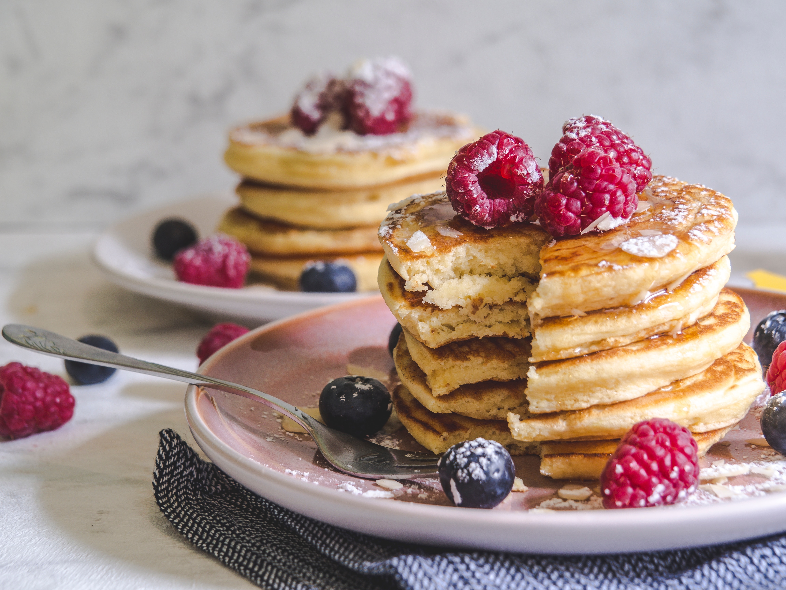

Pancake recipe

Description
A pancake (or hotcake, griddlecake, or flapjack) is a flat cake, often thin and round, prepared from a starch-based batter that may contain eggs, milk and butter and cooked on a hot surface such as a griddle or frying pan, often frying with oil or butter. It is a type of batter bread.
Ingredients
- 385g all-purpose flour
- 50g sugar
- 10g salt
- 11g baking powder
- 5-6g baking soda(choose whatever suits you)
- 460ml/g milk
- 60ml/g oil
- 8-10g vanilla extract
- 55-60g apple cider vinegar
- 3 eggs
Steps
- In a large mixing bowl, sift together the flour, sugar, salt, baking powder, and baking soda.
- In another bowl, whisk together the milk, oil, vanilla extract, apple cider vinegar, and eggs.
- Pour the wet ingredients into the dry ingredients and mix until just combined. Do not overmix.
- Heat a non-stick pan over medium heat. Once hot, ladle about 1/4 cup of batter onto the pan for each pancake.
- Cook until bubbles form on the surface of the pancake and the edges start to look set. Flip and cook for another minute or so until golden brown.
- Serve hot with your favorite toppings.
Serve hot and enjoy!!